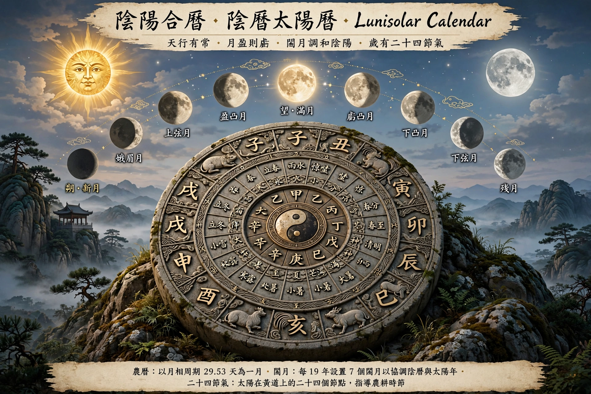

A lunisolar calendar is a calendar whose date indicates both the phase of the Moon (lunar month) and the time of the solar year. To keep the average year in step with the seasons, an extra intercalary (leap) month is added periodically.
Examples include the Chinese, Hebrew, Hindu, Buddhist, Tibetan, Korean, Vietnamese and traditional Japanese calendars, as well as the ancient Babylonian and Greek calendars. The Christian computus for Easter uses lunisolar principles.
A lunar year of 12 months totals about 354 days, roughly 11 days short of the solar year. The Metonic cycle reconciles them: 19 solar years almost equal 235 lunar months, so 7 leap months are inserted in 19 years — a rule used in the Hebrew and Chinese calendars, though the Chinese system inserts the leap month by astronomical criteria based on solar terms.
Purely lunar calendars such as the Islamic calendar drift through the seasons; purely solar calendars such as the Gregorian ignore lunar phases.